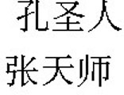
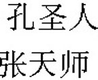
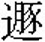

现在有一班好讲鬼话的人，最恨科学，因为科学能教道理明白，能教人思路清楚，不许鬼混，所以自然而然的成了讲鬼话的人的对头。于是讲鬼话的人，便须想一个方法排除他。
其中最巧妙的是捣乱。先把科学东扯西拉，羼进鬼话，弄得是非不明，连科学也带了妖气：例如一位大官[13]做的卫生哲学，里面说——
“吾人初生之一点，实自脐始，故人之根本在脐。……故脐下腹部最为重要，道书所以称之曰丹田。”
用植物来比人，根须是胃，脐却只是一个蒂，离了便罢，有什么重要。但这还不过比喻奇怪罢了，尤其可怕的是——
“精神能影响于血液，昔日德国科布博士发明霍乱（虎列拉）病菌，有某某二博士反对之，取其所培养之病菌，一口吞入，而竟不病。”
据我所晓得的，是Koch博士[14]发见（查出了前人未知的事物叫发见，创出了前人未知的器具和方法才叫发明）了真虎列拉菌；别人也发见了一种，Koch说他不是，把他的菌吞了，后来没有病，便证明了那人所发见的，的确不是病菌。如今颠倒转来，当作“精神能改造肉体”的例证，岂不危险已极么？
捣乱得更凶的，是一位神童做的《三千大千世界图说》[15]。他拿了儒，道士，和尚，耶教的糟粕，乱作一团，又密密的插入鬼话。他说能看见天上地下的情形，他看见的“地球星”，虽与我们所晓得的无甚出入，一到别的星系，可是五花八门了。因为他有天眼通[16]，所以本领在科学家之上。他先说道——
“今科学家之发明，欲观天文则用天文镜……然犹不能持此以观天堂地狱也。究之学问之道如大海然，万不可入海饮一滴水，即自足也。”
他虽然也分不出发见和发明的不同，论学问却颇有理。但学问的大海，究竟怎样情形呢？他说——
“赤精天……有毒火坑，以水晶盖压之。若遇某星球将坏之时，即去某星球之水晶盖，则毒火大发，焚毁民物。”
“众星……大约分为三种，曰恒星，行星，流星。……据西学家言，恒星有三十五千万，以小子视之，不下七千万万也。……行星共计一百千万大系。……流星之多，倍于行星。……其绕日者，约三十三年一周，每秒能行六十五里。”
“日面纯为大火。……因其热力极大，人不能生，故太阳星君居焉。”
其余怪话还多；但讲天堂的远不及六朝方士的《十洲记》[17]，讲地狱的也不过钞袭《玉历钞传》[18]。这神童算是糟了！另外还有感慨的话，说科学害了人。上面一篇“嗣汉六十二代天师正一真人张元旭”的序文，尤为单刀直入，明明白白道出——
“自拳匪假托鬼神，致招联军之祸，几至国亡种灭，识者痛心疾首，固已极矣。又适值欧化东渐，专讲物质文明之秋，遂本科学家世界无帝神管辖，人身无魂魄轮回之说，奉为国是，俾播印于人人脑髓中，自是而人心之敬畏绝矣。敬畏绝，而道德无根柢以发生矣！放僻邪侈，肆无忌惮，争权夺利，日相战杀，其祸将有甚于拳匪者！……”
这简直说是万恶都由科学，道德全靠鬼话；而且与其科学，不如拳匪[19]了。从前的排斥外来学术和思想，大抵专靠皇帝；自六朝至唐宋，凡攻击佛教的人，往往说他不拜君父，近乎造反。现在没有皇帝了，却寻出一个“道德”的大帽子，看他何等利害。不提防想不到的一本绍兴《教育杂志》里面，也有一篇仿古先生的《教育偏重科学无甯偏重道德》[20]（甯字原文如此，疑是避讳[21]）的论文，他说——
“西人以数百年科学之心力，仅酿成此次之大战争。……科学云乎哉？多见其为残贼人道矣！”
“偏重于科学，则相尚于知能；偏重于道德，则相尚于欺伪。相尚于欺伪，则祸止于欺伪，相尚于知能，则欺伪莫由得而明矣！”
虽然不说鬼神为道德根本，至于向科学宣告死刑，却居然两教同心了。所以拳匪的传单上，明白写着——
“

傅言由山东来，赶紧急傅，并无虚言！”（傅字原文如此，疑传字之误。）照他们看来，这般可恨可恶的科学世界，怎样挽救呢？《灵学杂志》内俞复先生答吴稚晖先生书[22]里说过：“鬼神之说不张，国家之命遂促！”可知最好是张鬼神之说了。鬼神为道德根本，也与张天师和仿古先生的意见毫不冲突。可惜近来北京乩坛，又印出一本《感显利冥录》[23]，内有前任北京城隍白知和谛闲法师的问答——
“师云：发愿一事，的确要紧。……此次由南方来，闻某处有济公临坛，所说之话，殊难相信。济祖是阿罗汉，见思惑已尽，断不为此。……不知某会临坛者，是济祖否？请示。
“乩云：承谕发愿，……谨记斯言。某处坛，灵鬼附之耳。须知灵鬼，即魔道也。知此后当发愿驱除此等之鬼。”
“师云”的发愿，城隍竟不能懂；却先与某会力争正统。照此看来，国家之命未延，鬼兵先要打仗；道德仍无根柢，科学也还该活命了。
其实中国自所谓维新以来，何尝真有科学。现在儒道诸公，却径把历史上一味捣鬼不治人事的恶果，都移到科学身上，也不问什么叫道德，怎样是科学，只是信口开河，造谣生事；使国人格外惑乱，社会上罩满了妖气。以上所引的话，不过随手拈出的几点黑影；此外自大埠以至僻地，还不知有多少奇谈。但即此几条，已足可推测我们周围的空气，以及将来的情形，如何黑暗可怕了。
据我看来，要救治这“几至国亡种灭”的中国，那种“

传言由山东来”的方法，是全不对症的，只有这鬼话的对头的科学！——不是皮毛的真正科学！——这是什么缘故呢？陈正敏《遯斋闲览》[24]有一段故事（未见原书，据《本草纲目》[25]所引写出，但这也全是道士所编造的谣言，并非事实，现在只当他比喻用）说得好——“杨勔中年得异疾；每发语，腹中有小声应之，久渐声大。有道士见之，曰：此应声虫也！但读《本草》取不应者治之。读至雷丸，不应，遂顿服数粒而愈。”
关于吞食病菌的事，我上文所说的大概也是错的，但现在手头无书可查。也许是Koch博士发见了虎列拉菌时，Pfeffer博士以为不是真病菌，当面吞下去了，后来病得几乎要死。总之，无论如何，这一案决不能作“精神能改造肉体”的例证。一九二五年九月二十四日补记。
注 释
[12] 本篇最初发表于1918年10月15日《新青年》第五卷第四号，署名唐俟。
[13] 指蒋维乔（1873—1958），字竹庄，号因是子，江苏武进人，民国初年曾任南京临时政府教育部秘书长，当时任北洋政府教育部参事。他曾在1914年出版《因是子静坐法》一书，提倡“静坐”。这里所引的第一段话，见1918年1月23、24、25日《北京大学日刊》上连续刊载的《蒋君维乔演说卫生哲学记录（转载六年十二月教育公报）》。鲁迅引述时有所省略。第二段话，见他译述的日本铃木美山所著《长寿哲学》一书，在该书《病之原因》一节中，引用德国“科布博士”（即科荷博士）吞食细菌的事，来证明“霉菌进入人身，而精神正确时，决不成病”。
[14] Koch博士 科荷博士（1843—1910），德国病菌学家。关于吞食细菌的事，本文“补记”有所改正，但仍有误。Pfeffer博士应为沛登柯弗博士（M.von Pettenkofer，1818—1901）。他是旧式的病理论者，认为疾病系由于体液变坏，和细菌无关。他吞了科荷所培养的霍乱菌，结果泻腹，并没有得霍乱病，但这只是证明病菌致病还必须有生理的条件，如果身体健康，即使细菌侵入体内，也能抵抗。
[15] 神童 指当时山东历城一个叫江希张的孩子。传说江希张不到十岁，就著了《四书白话解说》、《息战》、《大千图说》等书，其实都是他父亲江钟秀和别人代写的。当时一些人把他说成“神童”。美国人李佳白（Robert Richard Lee）操纵万国道德总会出版《息战》一书，并为该书写序，称他“具天纵之姿，有卫道之志”，“以一童子而能融洽教理，为世界民族请命”。《三千大千世界图说》，即《大千图说》，1916年出版。作者在书中说他创立“三千大千世界之说”，是鉴于“近来物质家，创无天帝鬼神之说，一时靡然从风，不知其贻害之大，将有使全球民物同归于尽者”，宣称要使“天下人人莫不敬天畏天”。下面所引的几段文字，分别见于该书“大千世界总论”、“赤精天”、“众星系总论”、“太阳星”等部分。
[16] 天眼通 佛家语，所谓“六通”（六种广大的“神通”）之一，即能透视常人目力所不能见的东西。
[17] 《十洲记》 即《海内十洲记》，一卷，旧题汉代东方朔著，实为六朝方士所作。内容系讲述荒诞的神仙故事。
[18] 《玉历钞传》 全称《玉历至宝钞传》，共八章，是宣传封建迷信的书，题称宋代“淡痴道人梦中得授，弟子勿迷道人钞录传世”。内容系讲述所谓“地狱十殿”的情况，宣扬因果报应。
[19] 拳匪 对参加义和团的民众的蔑称。参看本卷第172页注〔8〕。
[20] 《教育杂志》 月刊，绍兴县教育会编辑，1914年创刊。《教育偏重科学无甯偏重道德》一文，载1918年8月该刊第二十五期。
[21] 封建时代用字避免与皇帝和尊长名字相同，称为“避讳”。清宣宗（道光）名旻寧，故清人和遗老将“寧”改用为“甯”。
[22] 《灵学杂志》 应为《灵学丛志》，是当时宣传迷信的一种刊物，上海灵学会编，1918年1月发刊。俞复，江苏无锡人，当时“灵学派”的重要人物之一。1917年10月在上海与陆费逵等人设立盛德坛扶乩，组织灵学会，《灵学丛志》即由他主持。他的《答吴稚晖书》载于该刊第一卷第一期。吴稚晖（1865—1953），名敬恒，江苏武进人。早年参加同盟会，自称无政府主义者。后任国民党中央监察委员，中央政治会议委员等职。
[23] 《感显利冥录》 应为《显感利冥录》。下面引语中的“所说之话”，原作“所说之语”。
[24] 《

斋闲览》 宋代陈正敏（号遯翁）撰，原本十四卷，今佚。《说郛》第三十二卷中，收入四十余条。“应声虫”条中说：“淮西士人杨勔自言中年得异疾。每发言应答，腹中辄有小声效之；数年间其声浸大。有道士见之，惊曰：‘此应声虫也；久不治延及妻子，宜读《本草》，遇虫所不应者，当取服之。’勔如言读至雷丸，虫忽无声，乃顿饵数粒遂愈。”[25] 《本草纲目》 明代李时珍撰写的药物学著作，共五十二卷。文中所引的话见该书第三十七卷木部之四庽木类“雷丸”条。